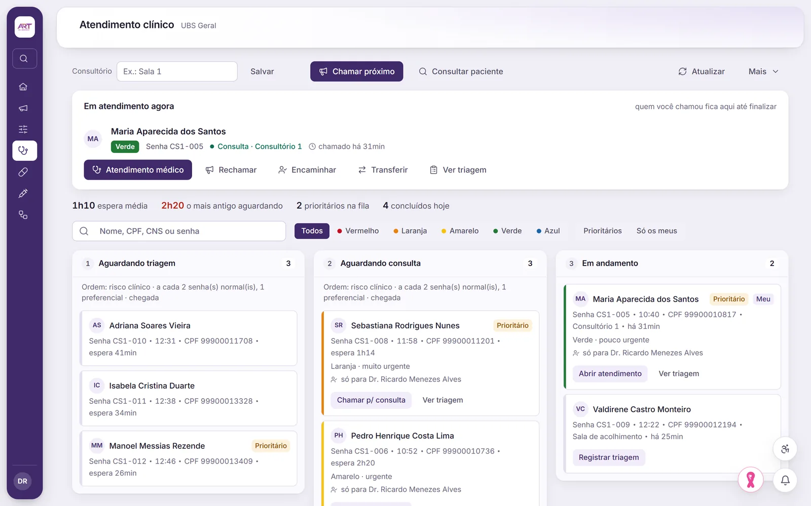
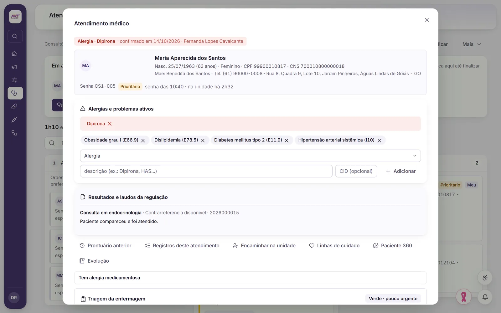
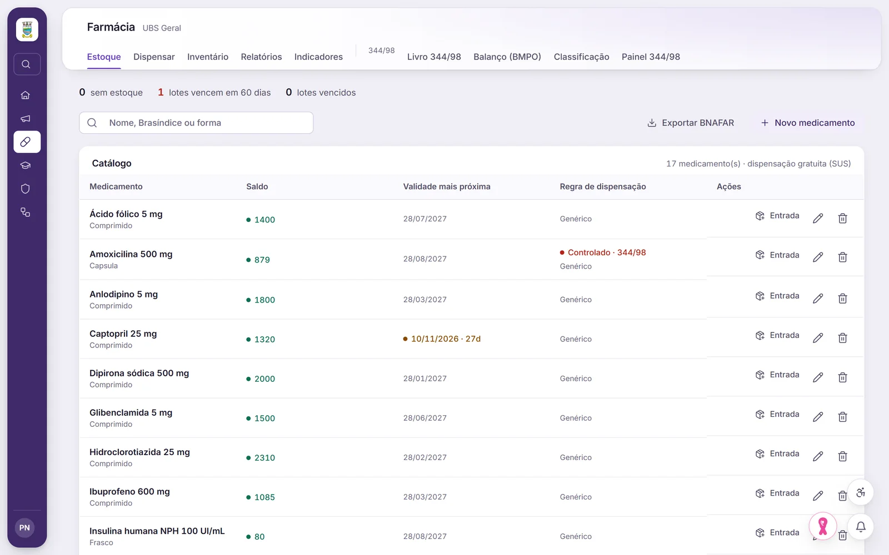

Recepção, agenda e fila
Agenda da UBS com registro de chegada. Chamada para triagem e médico, rechamada, não compareceu, transferência e encaminhamento interno.
Atenção primária
Fila com chamada para triagem e médico, prontuário com a visão completa do paciente, farmácia, controlados e sala de vacina no mesmo sistema.



O que a atenção primária faz
Agenda da UBS com registro de chegada. Chamada para triagem e médico, rechamada, não compareceu, transferência e encaminhamento interno.
Triagem, atendimento médico, reavaliação e testes rápidos, com documentos clínicos gerados em PDF.
Prontuário com a visão completa do paciente: lista de problemas, resultados e laudos num só lugar.
Estoque com entrada e baixa, dispensação da prescrição, inventário e exportação para o BNAFAR.
Escrituração conforme a Portaria 344/98, com saldo, balanço e conciliação.
Imunobiológicos, calendário, lotes e estoque, aplicações, carteira de vacinação, faltosos e rede de frio.
Em preparação: envio das aplicações de vacina ao SIPNI/RNDS, que depende de certificado digital.
Como funciona
Numa demonstração com dados fictícios, seguimos um paciente da chegada até a farmácia.